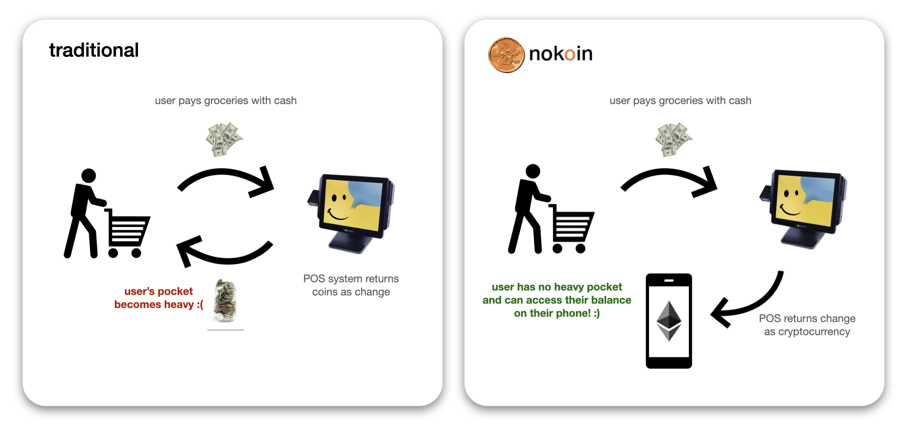
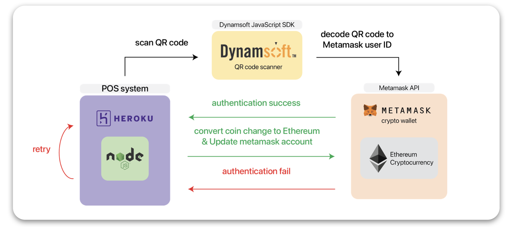

team members
heejoo jin, aiden lee, hyuntaek lim, and yejun kim
problem/goal
The goal of hackgt8 was to create and solve any problem that we felt we needed to address. We chose to research and solve the crisis regarding the waste of coins.
research
Coin making in general is pretty expensive. it costs 2 cents to make 1 penny, and 7 cents to make a nickel. While it takes loads of money to create coins, we, according to a news article on cbs news, throw away $62 million in coins each year by simply tossing them in the trash because of its lack of use. Additionally, since the rise of COVID-19, markets have encouraged more use of digitalized payments over cash and coin payments. With all these factors in mind, the US Mint has announced the cease of penny production starting 2023. It is clear that no one really wants to use coins anymore, so how can we turn this into an opportunity?
our approach
With the traditional approach, the user first pays with cash at a grocery store. The POS system then returns coins as change. As a result, the user’s pocket becomes heavy with a load of coins. with nokoin’s approach, instead of the POS system returning coins automatically, it will give an option to return the change as cryptocurrency. The user can provide their cryptocurrency identification and the change will be converted to crypto and deposited into their account.
demo video
how was it made?
- The POS shows the customer how much he or she needs to pay and payment options. After inserting cash into POS, the user will be provided with two choices: receiving coin and bill change and Ethereum. The functionalities for buttons were built using JavaScript, HTML, and CSS, and the User Interface for the POS was built using Adobe Creative Suite.
- If the customer chooses the Ethereum option, the POS will try to scan the customer’s QR code. In the POS system, our application will be represented in Heroku and provide a scanner where the customers can pull up their QR codes. The Dynamsoft API will decode the QR code so that the system can verify whether the customer has a valid Metamask account, a digital currency wallet.
- When the QR code validation is over, the Ethereum API (Web3) functions will work on transferring the purchased cryptocurrency into the customer’s digital wallet. Web3 will fetch the unique address of the customer from the Metamask and then transfer the digital currency. We fulfilled these requirements by modifying the Web3 API using python.
POS screen UI


what's next?
There are three areas of improvement in our product.
- How could we manage gas fee? When transferring and depositing cryptocurrency, a certain percentage of the amount is taken as the gas fee. Because of time constraint, we did not have enough time to figure out a way to get about the occurrence of the gas fee.
- How could we use not only crypto but also other connecting to different banking accounts? To consider a variety of nokoin customers, we could not only transfer to cryptocurrency accounts, but also bank accounts or money exchanging platforms such as Venmo or PayPal.
- How could we implement security? We wanted the customers to use our product safely, and this goal was one of the reasons why we chose to use QR codes for authentication. However, we recognize some unexpected issues and hacking attacks might happen. Further implementing cybersecurity options could make this solution more stable.